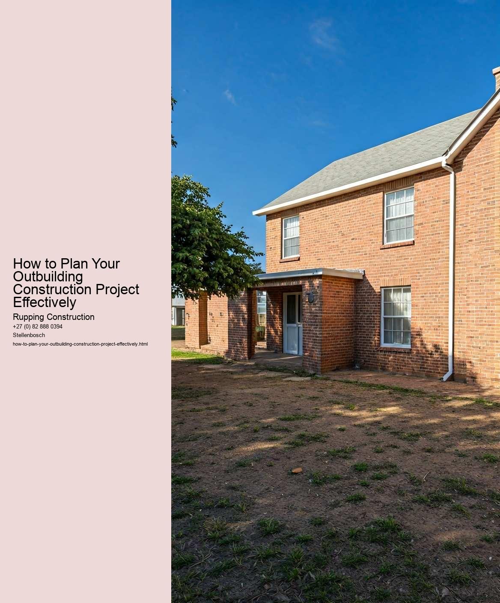

Assessing your needs and objectives is a crucial first step when planning your outbuilding construction project. Whether you envision a cozy garden shed, a spacious workshop, or a functional office space, clearly understanding what you need and what you aim to achieve will set the foundation for a successful build.
Begin by asking yourself what the primary purpose of the outbuilding will be. Is it intended for storage, leisure, work, or perhaps a combination of these functions? Defining the purpose will guide many of your subsequent decisions, from the size and layout to the materials youll choose. For instance, if the outbuilding is meant as a workspace, consider how much room you'll need for equipment, tools, and even space to move around comfortably.
Next, think about your specific needs. This could include factors like insulation, electrical outlets, windows, and ventilation. Do you need a climate-controlled environment? Will you require plumbing for a bathroom or kitchenette? Identifying these necessities early on will help you budget accurately and avoid costly changes during construction.
While assessing your needs, it's also vital to establish your objectives. What do you hope to achieve with this project? Are you looking to increase property value, create a space for hobbies, or perhaps develop a rental opportunity? Your objectives will influence your design choices and the level of investment you're willing to make. For example, if enhancing your property's value is a key goal, you might prioritize quality materials and aesthetics that appeal to potential buyers in the future.
Moreover, consider the long-term implications of your construction. Will your needs change in the future? It's wise to think about flexibility in your design. For instance, an outbuilding that can serve multiple purposes over time may provide more value than one that is strictly limited to a single function.
Lastly, don't overlook the importance of local regulations and zoning laws in your planning. These can dictate what you can and cannot build, affecting both your needs and objectives. Understanding these regulations early in the process will save you from potential headaches down the road.
In summary, thoroughly assessing your needs and objectives is foundational to planning your outbuilding construction project effectively. By taking the time to clarify your purpose, identify specific requirements, and consider both immediate and long-term goals, you will lay the groundwork for a successful and satisfying construction experience. This careful planning not only ensures that the final product meets your expectations but also enhances the overall value and utility of your property.
When embarking on the journey of constructing an outbuilding, whether it be a garage, shed, or workshop, budgeting and financing the project are crucial steps that can significantly influence its success. A well-structured budget not only provides a clear financial roadmap but also helps in making informed decisions throughout the construction process.
First and foremost, it is essential to define the scope of your outbuilding project. This includes determining its size, purpose, and necessary features. Once you have a clear vision, you can start estimating costs. Begin by researching the prices of materials, labor, permits, and any additional expenses that may arise. Local building codes and regulations may also affect your budget, so consulting with local authorities or a contractor is advisable.
After gathering all relevant information, create a detailed budget that outlines every anticipated expense. Be sure to include a contingency fund, typically around 10-15% of the total budget, to account for unexpected costs that may emerge during construction. This buffer can save you from financial strain should issues arise, such as fluctuating material prices or unforeseen labor costs.
Financing your outbuilding project is another critical aspect. Depending on the scale of your project, you may have several options available. If you have sufficient savings, using your own funds can be a straightforward approach. However, if additional financing is needed, consider loans or lines of credit specifically designed for home improvement projects. Research various lenders and their terms, ensuring that you choose the best option that fits your financial situation.
Another financing avenue could be seeking assistance from family and friends. While this option may come with its own set of complexities, it can be a viable solution if handled with clear communication and agreements. Additionally, some homeowners might explore community grants or local government assistance programs that support construction projects, especially those focused on sustainability or enhancing property value.
Ultimately, budgeting and financing your outbuilding project require careful planning and foresight. By taking the time to create a comprehensive budget and exploring various financing options, you can set the stage for a successful construction experience. This diligence not only helps to keep your project on track financially but also ensures that you can bring your vision to life without unnecessary stress. In the end, a well-planned outbuilding project can provide long-term benefits and enhance your property's value, making the effort well worth it.
When embarking on an outbuilding construction project, one of the most crucial steps is selecting the right materials and design. The materials you choose not only dictate the durability and longevity of the structure but also influence its aesthetics, functionality, and cost. Therefore, understanding the various options available and their implications is essential for effective planning.
First and foremost, consider the purpose of the outbuilding. Will it be a workshop, a storage space, a guest house, or perhaps a garden shed? The intended use will guide your material selection. For instance, if the outbuilding will house tools and equipment, durability is key. In this case, materials like steel or treated wood may be preferable, as they can withstand wear and tear. Conversely, if the space is meant for relaxation or entertainment, you might opt for more visually appealing materials such as timber or brick, which can enhance the overall aesthetic of your property.
Climate is another critical factor in material selection. In regions with harsh winters, insulated materials become essential to ensure the space remains usable year-round. On the other hand, in warmer climates, breathable materials that allow for ventilation can help keep the interior cool. Additionally, consider the local environment; materials that blend seamlessly with the surrounding landscape can enhance the overall appeal of your outbuilding.
Design plays a pivotal role in how well your outbuilding integrates with your existing structures and landscape. A well-considered design will take into account not only the size and shape of the outbuilding but also its orientation and relationship to existing buildings and features. For example, placing the outbuilding in a way that maximizes natural light can create a more inviting space. Furthermore, the architectural style should reflect or complement your home to maintain a cohesive look across your property.
Budget is an ever-present consideration. While it may be tempting to choose the cheapest materials available, investing in higher-quality options can save money in the long run by reducing maintenance costs and the need for repairs. Additionally, incorporating energy-efficient designs and materials can lead to significant savings on utility bills.
In conclusion, selecting the right materials and design for your outbuilding construction project requires careful thought and consideration. By assessing the intended use, local climate, aesthetic preferences, and budget, you can make informed decisions that will lead to a successful project. Ultimately, a well-planned outbuilding can enhance your property's value, functionality, and visual appeal, making it a worthwhile investment.
When embarking on an outbuilding construction project, one of the most critical yet often overlooked steps is navigating local regulations and permits. While the excitement of creating a new space-be it a garage, workshop, or shed-can be palpable, understanding the legal framework surrounding construction is essential for a smooth and successful project.
Local regulations and permitting processes vary widely depending on location, type of outbuilding, and intended use. Before breaking ground, it is vital to familiarize oneself with the specific laws in your area. This often begins with contacting your local planning or zoning department. They can provide valuable information regarding zoning laws, building codes, and any specific restrictions that may apply to your property. For instance, some areas may have height restrictions, setback requirements, or limitations on the type of structures that can be built.
In addition to zoning laws, understanding the permitting process is crucial. Most jurisdictions require permits for any substantial construction project, and failing to obtain these permits can lead to fines, mandated removal of the structure, or other legal issues. The process typically involves submitting detailed plans of your proposed outbuilding, which may need to be drawn up by a licensed architect or engineer. The plans must demonstrate compliance with local building codes, which cover safety standards, materials, and construction methods.
Moreover, securing a permit can take time, often weeks or even months, depending on the complexity of the project and the efficiency of the local government. Therefore, planning for this timeline is essential when setting your construction schedule. It's also wise to consider any potential public hearings or community feedback that may arise, especially if your outbuilding is larger or atypical.
Engaging with neighbors early in the process can also be beneficial. In some cases, local regulations might require notifying adjacent property owners about your construction plans. By communicating openly, you can address any concerns they might have, which can help mitigate objections and foster goodwill.
Finally, staying informed and organized throughout the process is key. Keep meticulous records of communications with local officials, copies of applications, and any feedback received. This documentation can be invaluable should any issues arise during construction.
In conclusion, while navigating local regulations and permits may seem daunting, taking the time to understand and comply with these requirements is an investment in the success of your outbuilding project. By doing so, you not only ensure that your construction is legal and safe but also pave the way for a project that meets your vision and enhances your property for years to come.
Checklist for Compliance in Outbuilding Construction Projects
Metrics for Assessing the Success of Your Outbuilding Project